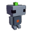
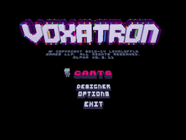
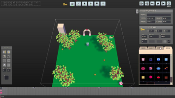
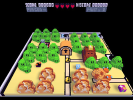

Voxatron
Dieser Artikel wurde für die folgenden Ubuntu-Versionen getestet:
Ubuntu 14.04 Trusty Tahr
Zum Verständnis dieses Artikels sind folgende Seiten hilfreich:

Voxatron  ist ein kommerzieller Retroshooter, welcher zur Darstellung auf Voxel-Rasteroptik setzt. Der Spieler stellt sich in dieser Spielewelt den Herausforderungen, bekämpft unzählige Gegner, sammelt Objekte ein und zerstört bei Bedarf die komplette Umgebung.
ist ein kommerzieller Retroshooter, welcher zur Darstellung auf Voxel-Rasteroptik setzt. Der Spieler stellt sich in dieser Spielewelt den Herausforderungen, bekämpft unzählige Gegner, sammelt Objekte ein und zerstört bei Bedarf die komplette Umgebung.
Ein Editor gestattet es neue Level zu entwerfen.
Das Spiel liegt als Alpha-Version vor.
|  |  |
| Hauptmenü | Spielszene |
Installation¶
Nachdem man Voxatron hier käuflich erworben hat, kann man das Spiel als .deb-Paket herunterladen und installieren [1].
Über "Anwendungen -> Spiele -> Voxatron" kann das Spiel gestartet werden.
Hinweis:
Das 64-bit Paket des Spiels hat eine Abhängigkeit zum Paket ia32-libs. Dieses ist seit Ubuntu 13.10 nicht mehr Bestandteil der offiziellen Paketquellen. Ein einfache Lösung für Benutzer einer 64-bit-Ubuntu-Version ist die Installation des 32-bit-Pakets von Voxatron.
Bedienung¶
Das Spiel kann ab Version 0.14 wahlweise mit der Tastatur oder einem anderen Controller gespielt werden.
| Menü | |
| Menüpunkt | Beschreibung |
| "Carts" | Verschiedene Spielmodi stehen in Form sogenannter Carts (virtuelle Spielkonsolen) zur Auswahl. Alpha Carts sind Spielmodis die Bestandteil der Grundinstallation sind. BBS Carts sind von verschiedenen Nutzern erstellte Spielmodi, die bei bestehender Internetverbindung heruntergeladen werden können. |
| "Designer" | Startet den Leveleditor. |
| "Options" | Audio- und Videoeinstellungen wie z.B. Fenster-/Vollbildmodus, Auflösung und Konfiguration der Eingabegeräte. |
| "Exit" | Spiel beenden. |
|  |  |
| Designer | BBS Level |
Designer¶
Mit dem Designer können eigene Level für das Spiel entworfen werden. Nach einer Registrierung können diese im Forum hochgeladen werden. Diese stehen anderen Spielern in Form von BBS Carts zur Verfügung. Eine Liste von Kreationen kann unter lexaloffle.com  eingesehen werden.
eingesehen werden.
Erstellte Level sind im Homeverzeichnis unter ~/.lexaloffle/Voxatron zu finden.

Infobox¶
| Voxatron | |
| Originaltitel: | Voxatron |
| Genre: | Action-Shooter |
| Sprache: | |
| Veröffentlichung: | 2011 |
| Publisher: | Lexaloffle Games |
| Systemvoraussetzungen: | 1GHz-Prozessor |
| Medien: | Download |
| Strichcode / EAN / GTIN: | |
| Läuft mit: | nativ |
- Erstellt mit Inyoka
-
 2004 – 2017 ubuntuusers.de • Einige Rechte vorbehalten
2004 – 2017 ubuntuusers.de • Einige Rechte vorbehalten
Lizenz • Kontakt • Datenschutz • Impressum • Serverstatus -
Serverhousing gespendet von